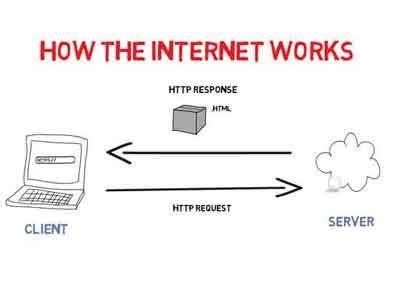
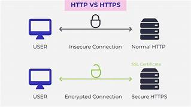

Cara Kerja Internet Secara Umum
Internet adalah jaringan global yang menghubungkan jutaan perangkat di seluruh dunia, memungkinkan mereka berkomunikasi dan bertukar data. Bayangkan internet sebagai jalan raya digital yang memungkinkan pertukaran informasi dengan cepat dan efisien. Data yang dikirimkan melalui internet dipecah menjadi paket-paket kecil yang dikirimkan dari satu perangkat ke perangkat lainnya melalui berbagai rute. Paket-paket ini kemudian disusun kembali di tujuan akhir untuk membentuk pesan lengkap.
Sumber: how-the-internet-works
Definisi dan Cara Kerja HTTP & HTTPS
HTTP (Hypertext Transfer Protocol) adalah protokol dasar yang digunakan untuk mentransfer data di web. Ini memungkinkan browser untuk berkomunikasi dengan server dan mengakses halaman web. HTTP berfungsi dengan cara mengirimkan permintaan dari browser pengguna ke server web dan kemudian server mengirimkan kembali data yang diminta dalam bentuk halaman web yang dapat ditampilkan oleh browser.
HTTPS (Hypertext Transfer Protocol Secure) adalah versi aman dari HTTP. HTTPS menggunakan SSL/TLS untuk mengenkripsi data, sehingga informasi sensitif seperti kata sandi dan nomor kartu kredit tetap aman selama transfer. Ketika menggunakan HTTPS, data dienkripsi sebelum dikirimkan, membuatnya lebih sulit bagi pihak ketiga untuk mengakses informasi selama transmisi.
Sumber: MDN Web Docs
Definisi dan Cara Kerja Nama Domain
Nama domain adalah alamat unik yang digunakan untuk mengakses situs web. Contoh nama domain adalah www.example.com. Nama domain menggantikan alamat IP yang kompleks dan membuatnya lebih mudah diingat oleh pengguna. Nama domain disusun dalam hierarki yang terdiri dari domain tingkat atas (seperti .com, .org) dan subdomain.
Saat Anda memasukkan nama domain di browser, server DNS akan menerjemahkan nama domain tersebut menjadi alamat IP yang sesuai, sehingga browser dapat mengakses situs web yang dimaksud. Proses ini disebut sebagai pencarian DNS, yang melibatkan serangkaian kueri ke berbagai server DNS hingga alamat IP yang benar ditemukan.
Sumber: Wikipedia
Definisi dan Cara Kerja Hosting
Hosting adalah layanan yang menyediakan tempat untuk menyimpan semua file dan data yang dibutuhkan oleh situs web agar dapat diakses melalui internet. Penyedia layanan hosting menyediakan server yang selalu terhubung ke internet dan siap menerima permintaan akses dari pengguna. Terdapat berbagai jenis hosting, termasuk shared hosting, VPS (Virtual Private Server), dan dedicated hosting, yang masing-masing menawarkan tingkat kinerja dan keamanan yang berbeda.
Saat seseorang mengakses situs web, permintaan dikirim ke server hosting yang menyimpan file situs tersebut. Server kemudian mengirimkan file yang diminta ke browser pengguna, yang kemudian menampilkan halaman web.
Sumber: Wikipedia
Definisi dan Cara Kerja DNS
DNS (Domain Name System) adalah sistem yang menerjemahkan nama domain menjadi alamat IP yang dapat dikenali oleh server. Tanpa DNS, kita harus mengingat dan memasukkan alamat IP setiap kali kita ingin mengakses situs web, yang tentu saja akan sangat merepotkan. DNS bekerja seperti buku telepon internet, menerjemahkan nama domain yang mudah diingat menjadi alamat IP numerik.
DNS terdiri dari berbagai komponen, termasuk server DNS root, server DNS tingkat atas, dan server DNS otoritatif. Proses pencarian DNS melibatkan query dari browser pengguna ke server DNS yang tepat untuk menemukan alamat IP yang terkait dengan nama domain.
Sumber: MDN Web Docs
Definisi dan Cara Kerja Browser
Browser adalah perangkat lunak yang memungkinkan pengguna untuk mengambil, menampilkan, dan berinteraksi dengan konten di web. Contoh browser populer adalah Google Chrome, Mozilla Firefox, dan Safari. Browser berfungsi sebagai perantara antara pengguna dan internet, memungkinkan akses ke berbagai situs web dan aplikasi online.
Ketika pengguna memasukkan URL atau melakukan pencarian, browser mengirimkan permintaan ke server yang sesuai, menerima data yang diminta, dan kemudian menampilkan halaman web atau hasil pencarian kepada pengguna. Browser juga menangani berbagai tugas lain, seperti caching untuk mempercepat akses ulang, dan keamanan untuk melindungi pengguna dari konten berbahaya.
Sumber: MDN Web Docs